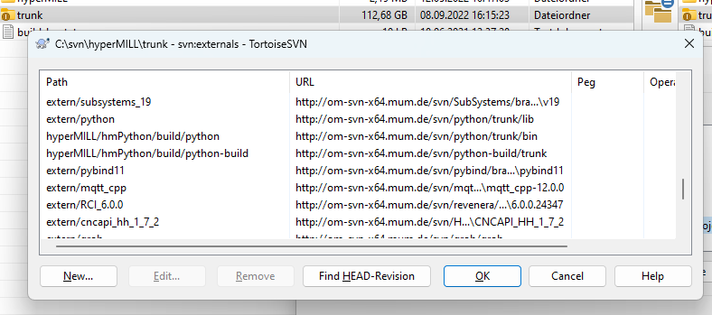
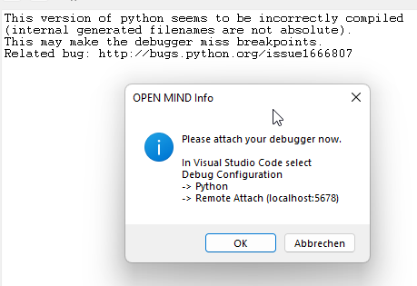
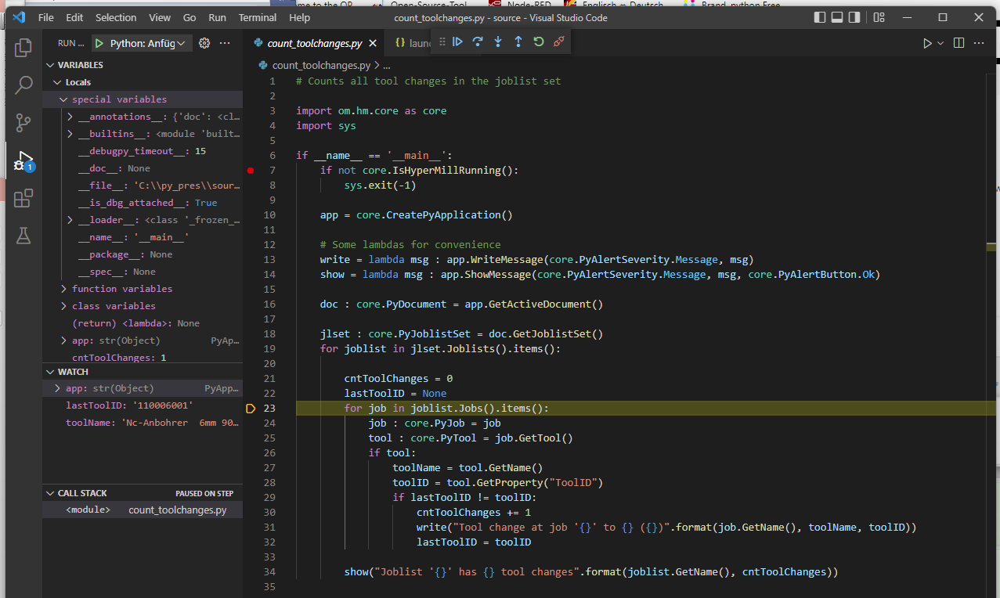
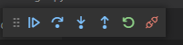

Developer documentation for Python¶
Externals¶
We need some SVN externals for Python. These are defined in the SVN properties the hyperMILL trunk.
URL |
Repository |
Description |
|---|---|---|
hyperMILL/hmPython/build/python |
Python embedded version that’s used to build Python libraries. |
|
hyperMILL/hmPython/build/python-build |
Additional packages for the build process |
|
extern/pybind |
Includes and libraries to use Pybind11 |
|
extern/python |
Includes and libraries to use Python functions |
Hint
Please perform an SVN UPDATE on the trunk to update these files!
Hint
The SVN are subject to change, due to migration to Github.
Visual Studio solutions und project structures¶
The Python projects are part of the solution hyperMILL.sln. This solution is also used to build the project on the Jenkins server.
For daily use the “convenience project” hmPython.sln might be the better choice.
The main Python projects are listed below. They have to be build in the given order.
# |
Project |
Description |
|---|---|---|
0.1 |
trunk/hyperMILL/hmPython/hmPrePython |
Checks the externals and copies the files to the build directory, generates version information |
0.2 |
trunk/hyperMILL/hmPython/hcsPybind |
Copies local Python files from hyperCAD-S (if available) to the build directory |
1.1 |
trunk/hyperMILL/hmPython/hmSphinx |
Contains the documentation for Python and generates the pybind and intellisense files |
1.2 |
trunk/hyperMILL/hmPython/hmCore |
Base classes for the CAM Python, encapsulates the hyperMILL COM API |
1.3 |
trunk/hyperMILL/hmPython/hmUi |
Base dialogs for the UI |
99.1 |
trunk/hyperMILL/hmPython/hmPython |
Generates the deployment package for Python |
There are some other projects that are needed to compile the Python libraries, but they are changed less often.
Project |
Description |
|---|---|
trunk/hyperMILL/PROJECTS/hmAPI/hmAPIBridge |
Commonly used base classes für COM server und Python |
trunk/hyperMILL/PROJECTS/hmAPI/hmAPIPyScript |
Classes to execute Python scripts in hyperMILL |
trunk/hyperMILL/PROJECTS/hmAPI/hmAPIServer |
COM Server API |
trunk/hyperMILL/UTILS/hmPythonRunner |
Run Python Script… module |
trunk/hypermILL/PROJECTS/hmJob/omUiJob |
Contains the Python dialog |
Typical workflow¶
Adding or updating methods:
Change the source code in the project (e. g. hmCore)
New changes or updated parameters must be ALWAYS changed in hmSphinx (e.g. coredoc.rst). This step is especially important, because the hmSphinx scripts generate from this documentation the interfaces for pybind11. Rebuild hmSphinx after the changes.
Rebuild the projects that are related to the changes.
At least Rebuild ALWAYS the project hmPython, to collect all information and publish it in the
OPEN MIND/.../Shared/pythonfolder.
Hint
Use Rebuild only to build the projects. Build may not run, because some files are not under control by Visual Studio.
Rebuild may take too long…
Build environment¶
The shared build directory with a local (embedded) Python installation is trunk/hyperMILL/hmPython/build. Rebuild hmPrePython to Initializes
the build environment.
hmSphinx artifacts¶
The artifacts of hmSphinx are generated by the script hmSphinx\scripts\run_sphinx.bat. The generated files can be found the build directory.
The following folders will be created:
Folder |
Description |
|---|---|
sphinx_init |
This folder contains the structure for each module. The generated Python files are loading the Pybind DLLs or the intellisense. |
pybind |
Class declarations for Pybind11. hmSphinx generates for each project two files <project>_h.inc als Include für den Header, <project>_cpp.inc als Include für die Source-Datei |
html |
HTML documentation for Python. This folder will be archived in |
hm<project> artifacts¶
The different hm<project> projects (hmCore, hmUi, …) generate DLL files with the names _hm<project>X64.dll (and corresponding .pdb files), e.g. _hmCoreX64.dll an _hmCoreX64.pdb.
These files will be also copied to the hyperMILL-Win64 directory.
hmPython artifacts¶
The project hmPython copies all necessary artifacts from the Python build directory to the folder OPEN MIND/Shared/<version>/python/Lib/om.
These files are also read by omUpdate on the Jenkins build server and will be deployed with hyperMILL.
Hint
EGG and WHL archives are no longer deployed, because some of the additional packages (e.g. debugpy) can’t be deployed in an archive.
Documentation with Sphinx¶
Not only the implementation of the methods is important, but also the documentation with Sphinx.
Mistakes in the documentation, like missing entries, typos in method names or parameter names lead to errors, that appear during the build process (best case) or later when the method is called.
To generate the pybind11 code, we had to introduce some additional commands, which are suppressed by the extension file pybind11.py. This file implements those as empty commmands.
The following text describes some special cases. Further information on ReStructuredText and Sphinx can be found here: www.sphinx-doc.org.
Module definitions and dependencies¶
In the module description the generated DLL must be referenced. The name of the DLL is always _hm<*project*>X64.dll, e,g. _hmCoreX64.dll. Der leading underscore is a naming convention
of Python, X64 is a naming convention within hyperMILL.
The pybind11 files include these files.
In the documentation must contain the following entry:
.. module:: om.cam.core
.. import-dll:: _hmCoreX64
The module name must be complete (mit om.cam.), the name uses always lower cases, in import-dll, the suffix .dll must be omitted and camelCasing will be used in the name.
For the forwarding and intellisense implementation a valid Python code will be generated, therefore all dependencies must be fulfilled. They can be imported by .. import::.
.. module:: om.cam.ui
.. import-dll:: _hmUiX64
.. import:: om.cam.core (PyObject, PyProperty, PyPropertySet)
For .. import:: exist two variants:
.. import:: om.cam.core
This variant will be translated to
import om.cam.core
and the other variant
.. import:: om.cam.core (PyObject, PyProperty, PyPropertySet)
will be translated to
from om.cam.core import (
PyObject,
PyProperty,
PyPropertySet
)
The latter variants gives more controlled and should be preferred.
Class definitions¶
Standard classes¶
Class declarations¶
Standard classes are all classes, which will be declared in C++ and Python the keyword class. For the right inheritance, the inherited classes have to be defined:
.. class:: PyApplication(PyObject)
The inheritance will be given in brackets. In this case PyApplication inherits all attributes from PyObject. The inheritance will be used in
generated Python files and the pybind11 files.
Remark: All Python classes should inherit from PyObject.
Generally, the script assumes for the inheritance that the class names in C++ and Python are identical. (PyObject) will inherit in pybind11 from PyObject_.
auto pyClsPyApplication = pybind11::class_<PyApplication, PyObject_>(pyApi, "PyApplication" ...
In special cases where the C++ class names and Python class names differ, one can use the keyword .. pybind-inheritance::.
.. class:: PyObject
.. pybind-inheritance:: PyObject_
This is the base class of all hmPython objects. It provides some common functionality like getting the name, UUID or type information.
In this case the C++ class is named PyObject_, because PyObject is already used CPython as the base class. The code snipped will be translated to
auto pyClsPyObject = pybind11::class_<PyObject_>(pyApi, "PyObject" ...
Here’s a more complex special case:
.. class:: PyParameterDialog(PyObject)
.. pybind-inheritance:: PyParameterDialog<PyParameterDescription>
is translated to
auto pyClsPyParameterDialog = pybind11::class_<PyParameterDialog<PyParameterDescription>, PyObject_>(pyApi, "PyParameterDialog" ...
With .. pybind-inheritance:: also C++ template-declarations can be done. PyObject_ will be added automatically, when (PyObject) is given.
Method declarations¶
Python knows three kinds of methods: instance methods, static methods and class methods: These keywords are used for declaration
.. method:: myMethod(self, myArguments: list) -> str
.. staticmethod:: myStaticMethod(myArguments: list) -> str
.. classmethod:: myClassMethod(cls: object, myArguments: list) -> str
In the normal case, only instance methods are used, in rare cases static methods. After the method name an argument list and return value with type hint should be given. The type hint consists of the Python base types or declared classes (None, object, str, list, dict, PyAppliation, …) The type hint is an important information for the intellisense of a Python IDE.
The auto-generation assumes for each Python method a C++ method with the same name
.. class:: PyPropertySet
.. method:: GetByIndex(self, index: int) -> PyProperty
Returns the property at the given index or ``None``.
:param int index: Index of the property
:return: Property at the index position
:rtype: PyProperty
will be translated to
pyClsPyPropertySet.def("GetByIndex",
&PyPropertySet::GetByIndex
, "index"_a
...
The arguments for the definitions are taken from the parameter list.
The parameters are given in this format: :param <type> <name>: <docstring>. The type <typ> must be an already declared Python type.
:return: <docstring> set the documentation for the return value, :rtype: the type of the return value.
Some special cases are described here:
Different method names:
There are some cases, where the Python method name can’t be directly translated to C++ method name. This is mostly the case for the init method.
.. method:: __init__()
.. pybind-method:: pybind11::init<>()
.. method:: __init__(theName: str, theDescriptions: list[PyParameterDescription], theUiName: str = "")
.. pybind-method:: pybind11::init<PyString, PyVec<PyParameterDescription>&, PyString>()
will be translated to
pyClsPyParameterGroup.def(pybind11::init<>()
...
pyClsPyParameterGroup.def(pybind11::init<PyString, PyVec<PyParameterDescription>&, PyString>()
, "theName"_a
, "theDescriptions"_a
, "theUiName"_a = ""
...
In pybind11 the __init__ function must always use the pybind::init<parameter_list>().
The same pattern works for all other function, here for overloading of functions.
.. function:: PyCreateParameterDialog(title: str, description: PyParameterDescription) -> PyObject
.. pybind-method:: pybind11::overload_cast<const PyString&, PyParameterDescription&>(&PyCreateDialog)
will be translated to
pyApi.def("PyCreateParameterDialog"
, pybind11::overload_cast<const PyString&, PyParameterDescription&>(&PyCreateDialog)
...
In this case the C++ function can’t be automatically determined by the compiler. It must be set by the developer by using a pybind11 cast.
Return of a reference:
In really rare case, like in the function CreatePyApplication() a reference to a singleton will be returned. References can be indicated by
the keyword .. pybind-reftype::.
.. function:: CreatePyApplication() -> PyApplication
.. pybind-reftype:: pybind11::return_value_policy::reference
will be translated to
pyApi.def("CreatePyApplication"
, &CreatePyApplication
, pybind11::return_value_policy::reference
...
Default parameters:
In the init example above __init__(theName: str, theDescriptions: list[PyParameterDescription], theUiName: str = "")
a default parameter for theUiName will be used.
Setting a default value can be done at the end of the parameter list with the command .. pybind-default:: <parametername> = <parametervalue>
.. method:: __init__(theName: str, theDescriptions: list[PyParameterDescription], theUiName: str = "")
.. pybind-method:: pybind11::init<PyString, PyVec<PyParameterDescription>&, PyString>()
Initializes a PyParameterGroup with a list of PyParameterDescriptions and a PyString as name.
:param str theName: Name of the group that will be used in the UI.
:param list[PyParameterDescription] theDescriptions: List of PyParameterDescriptions.
:param str theUiName: Name that will be used in the UI
.. pybind-default:: theUiName = ""
This will be translated to
pyClsPyParameterGroup.def(pybind11::init<PyString, PyVec<PyParameterDescription>&, PyString>()
, "theName"_a
, "theDescriptions"_a
, "theUiName"_a = ""
Now an empty string is assigned to theUiName.
Enumeration classes¶
Class declarations¶
Enumeration types that are declared in C++ with enum class, have to inherit from enum.IntEnum or enum.IntFlag. Additionally, pybind11 must known that this is an enumumeration.
Values¶
The enumration values must be given a CSV table. It’s assumed that the names of the values are the same in C++ and Python.
In the documentation the :header: keyword must be given directly under .. csv-table::.
.. class:: PyAlertButton(enum.IntEnum)
Enumeration class for buttons in an alert message box. Used in :meth:`PyApplication.ShowMessage`.
.. csv-table::
:header: "Value", "Description"
"NoButton", "No button"
"Yes", "Inserts a **Yes** button"
"No", "Inserts a **No** button"
"Cancel", "Inserts a **Cancel** button"
"Retry", "Inserts a **Retry** button"
"Ok", "Inserts an **Ok** button"
"Ignore", "Inserts an **Ignore** button"
Debugging with Visual Studio Code¶
Debugging¶
Debugging of Python code within the hyperMILL application is undoubted an expert thing. The debugging is done by the Debug Application Protocol (DAP) over TCP/IP connections. While this option is available in Visual Studio Code, it’s missing in Visual Studio Professional.
For debugging the Python code must be started in hyperMILL and the same script must be load in VSCode in the editor.
You can set breakpoints in VSCode at any point. You can watch any variable at the breakpoints and go stepwise through the code and jump into functions. This can be useful for large scripts.
Warning
Due to massive problems with debugging, this feature is not officially supported at the moment! The workflow below is written for the “old” Python dialog in hyperMILL. To enable the feature, the environment variable
set USE_HMPYTHON=1
must be set.

While “Run” (green arrow button) starts the script immediately, “Debug” (X’ed bug) asks first to attach the debugger.
By default, the socket localhost:5678 is reserved for the Debug Adapter protocol. If more than one hyperMILL application is running, port number will increase.
Important After closing the socket, you have 15 s to connect VSCode. If no connection is the debugger is found, you’ll get a reminder to connect.
The connection from VSCode must be setup at the first time. After clicking the Debugging symbol (Left panel: “Arrow on bug”),
for the first a time a selection for the debugging method will be shown. Please select “Remote Attach” and localhost and then
5678 (shown in the hyperMILL dialog before).
The configuration will be saved in .vscode/launch.json. You can copy also thise configuration below.
{
// Verwendet IntelliSense zum Ermitteln möglicher Attribute.
// Zeigen Sie auf vorhandene Attribute, um die zugehörigen Beschreibungen anzuzeigen.
// Weitere Informationen finden Sie unter https://go.microsoft.com/fwlink/?linkid=830387
"version": "0.2.0",
"configurations": [
{
"name": "Python: Aktuelle Datei",
"type": "python",
"request": "launch",
"program": "${file}",
"args": [],
"console": "integratedTerminal"
},
{
"name": "HMC: Attach to 5678",
"type": "python",
"request": "attach",
"connect": {
"host": "localhost",
"port": 5678
},
"pathMappings": [
{
"localRoot": "${fileDirname}",
"remoteRoot": "."
}
]
},
{
"name": "HMC: Attach to 5679",
"type": "python",
"request": "attach",
"connect": {
"host": "localhost",
"port": 5679
},
"pathMappings": [
{
"localRoot": "${fileDirname}",
"remoteRoot": "."
}
]
}
]
}
A detailled description of .vscode/launch.json can be found here: code.visualstudio.com/docs/python/debugging#_set-configuration-options.
See also code.visualstudio.com/docs/editor/variables-reference.
After attaching the debugger successfully, you will see a typical functionality of a debugger.
On the left side, you can see the variables, watches and the callstack.
Breakpoints can be added or removed by a double-click on the line numbers. At the top corner of the source code window, you can see some control elements. Don’t use restart. This will cause hyperMILL to crash.
Summary: From repositories to deployment path¶
The deployment path is at the moment C:\Program Files\OPEN MIND\Shared\<version>\python.
Python itself is an embedded deployment, this means it “lives” in the folder where it is installed. The advantage is, that one can install
different versions side-by-side without interference.
The base version of Python 3.9.4 has been installed once and copied to the Shared folder. There’s no step in the workflow that updates the Python version in the Shared folder.
omUpdate will copy the HCS Python files from the HCS installation in the final Python library Path
The repositories listed in Externals are used only internally. They are not copied to the Shared folder.
hmPrePython.vcxprojmerges the build repository python-build into python and removes old debugpy-versions.hmSphinx.vcxprojdoes a lot of things: * Read the documentation and create source code for Pybind11 and intellisense files. The intellisense.pyiare located inbuild\packages\om\cam. This folder will be copied later to Shared. * Generate a documentation inbuild\html. * Zip this documentation tohmPython_html.zip. This file will be copied later to Shared.hmCore.vcxprojandhmUi.vcxprojgenerate the DLLs (PYDs) for the Python distribution. The resulting files will be copied tobuild\packages\om\cam. This folder will be copied later to Shared.hmPython.vcxprojadds some structural Python files tobuild\packages\omand copies the folder ``om`` to ``SharedPythonLibom``. Also the full documentation will be copied toShared\Python\docs.
Hint
Once a file is added to the Shared path, it must be manually removed by an administrator!